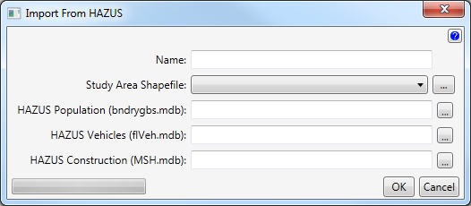
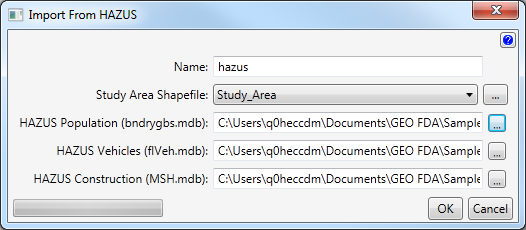
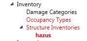

Import From HAZUS
Importing structure inventories from the HAZard United States (HAZUS) database is accomplished by filling out the Import From HAZUS dialog.

- Enter the name of the structure inventory.
- Select or browse to the Study Area Shapefile.
- Enter or browse to the HAZUS Population file.
- Enter or browse to the HAZUS Vehicles file.
- Enter or browse to the HAZUS Construction file.
Example

After clicking the Ok button, the name of the structures will appear in the Study Tree.
